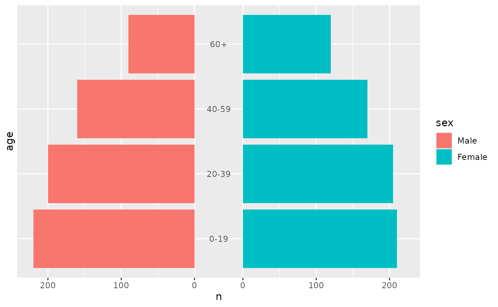
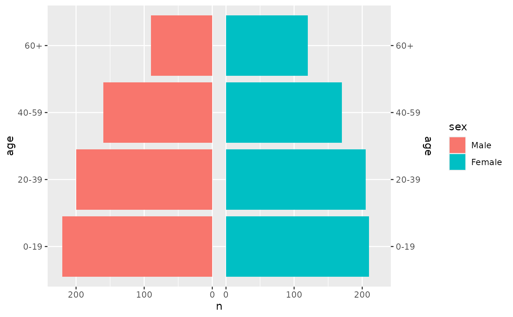
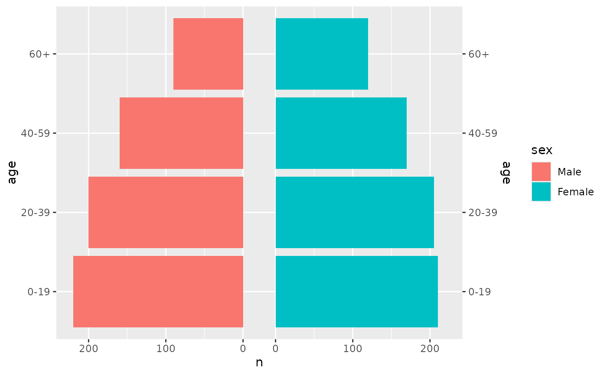

coord_pyramid() is a Cartesian coordinate system for horizontal pyramids
drawn with position_pyramid(). It labels the value axis without the minus
sign on the left side, extends the value axis equally far on both sides of
zero, and places the age axis on the left, on the right, on both sides or in
the centre of the pyramid, optionally in a gap between the two sides.
Usage
coord_pyramid(
age_axis = c("left", "right", "both", "centre", "none"),
left = NULL,
gap = NULL,
symmetric = TRUE,
xlim = NULL,
ylim = NULL,
expand = TRUE,
clip = "on"
)Arguments
- age_axis
Where to draw the age axis:
"left","right","both","centre"(between the two sides, see Age axis below) or"none"."center"is accepted as well.- left
The value of the side variable drawn on the left, such as
"Female", for every layer drawn withposition_pyramid(). A layer can override it withposition_pyramid(left = ...). Defaults to the first level when the side variable is a factor, and to the first value in sorted order otherwise. The legend keeps its own order; set it with, for example,scale_fill_discrete(breaks = c("Female", "Male")).- gap
The width of an empty strip between the two sides, as a proportion of the panel width. Defaults to
0.12whenage_axisis"centre", which leaves room for the age labels, and to0otherwise.- symmetric
If
TRUE, the value axis extends equally far on both sides of zero, so the two sides share one scale. Ignored whenxlimis set.- xlim, ylim
Limits for the x and y axes.
- expand
If
TRUE, the default, adds a small expansion factor to the limits to ensure that data and axes don't overlap. IfFALSE, limits are taken exactly from the data orxlim/ylim. Giving a logical vector will separately control the expansion for the four directions (top, left, bottom and right). Theexpandargument will be recycled to length 4 if necessary. Alternatively, can be a named logical vector to control a single direction, e.g.expand = c(bottom = FALSE).- clip
Should drawing be clipped to the extent of the plot panel? A setting of
"on"(the default) means yes, and a setting of"off"means no. In most cases, the default of"on"should not be changed, as settingclip = "off"can cause unexpected results. It allows drawing of data points anywhere on the plot, including in the plot margins. If limits are set viaxlimandylimand some data points fall outside those limits, then those data points may show up in places such as the axes, the legend, the plot title, or the plot margins.
Value axis
Only the labels lose their sign. The data and the scale keep the signed
values that position_pyramid() produces, so breaks, limits and reference
lines on the left side are still given as negative numbers. Any labels
given to ggplot2::scale_x_continuous() apply to the absolute values, for
example labels = scales::label_percent(). With a gap, a break at zero is
drawn on both inner edges, so a gap narrower than two zero labels makes them
overlap. The value axis must be linear, and a secondary value axis keeps
its signs.
Age axis
"left" and "right" move the age scale to that side together with its
title, and "both" duplicates it on the right, as
scale_y_discrete(sec.axis = dup_axis()) would. "centre" draws the age
labels inside the panel, above the layers and in the middle of the gap,
styled by the axis.text.y.left theme element. If the labels are wider
than the gap, increase gap.
See also
position_pyramid(), which mirrors the left side.
Examples
library(ggplot2)
pop <- data.frame(
age = factor(rep(c("0-19", "20-39", "40-59", "60+"), 2)),
sex = factor(rep(c("Male", "Female"), each = 4), c("Male", "Female")),
n = c(220, 200, 160, 90, 210, 205, 170, 120)
)
p <- ggplot(pop, aes(x = n, y = age, fill = sex)) +
geom_pyramid()
p + coord_pyramid()
 # Women on the left
p + coord_pyramid(left = "Female")
# Women on the left
p + coord_pyramid(left = "Female")

# Age labels in a gap between the two sides
p + coord_pyramid(age_axis = "centre")

# Age labels on both sides, with a narrow gap
p + coord_pyramid(age_axis = "both", gap = 0.08)
